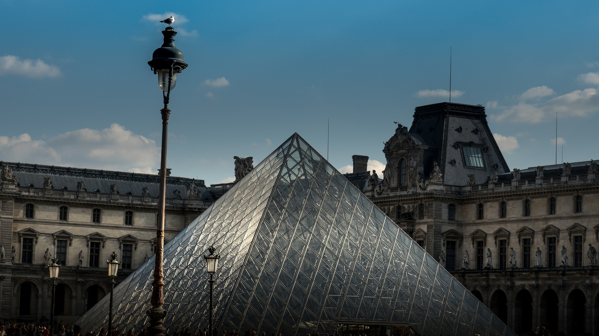
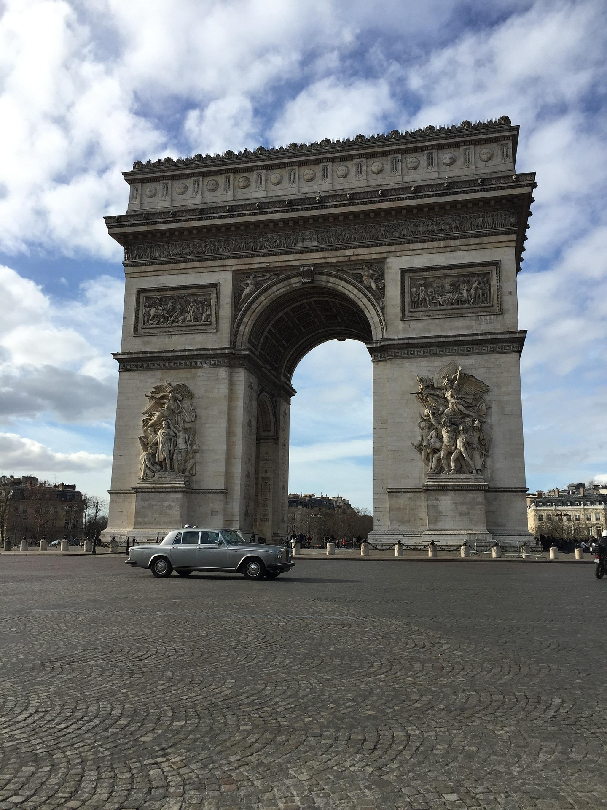
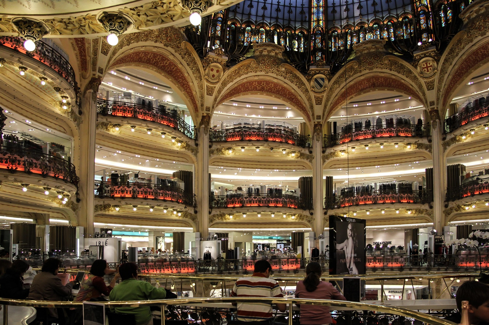
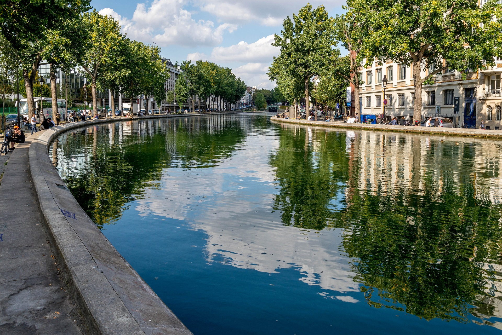
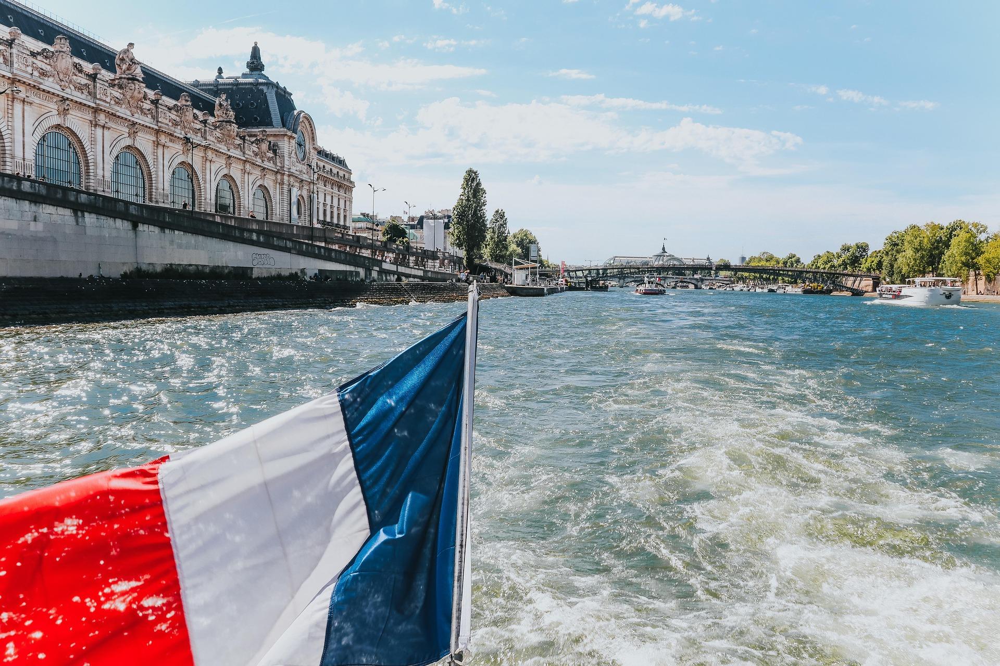
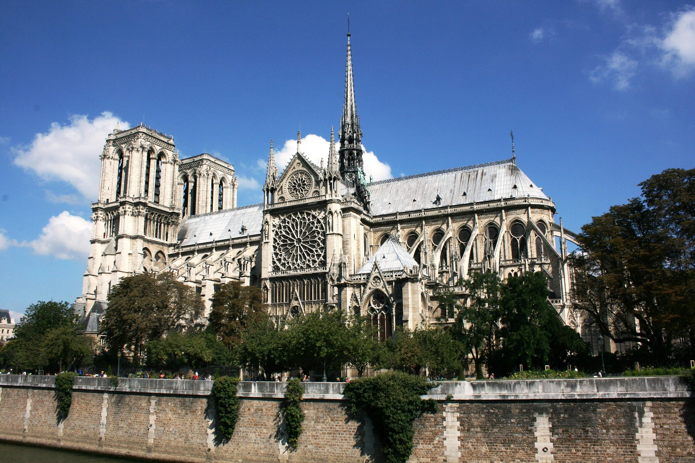

位於巴黎市中心的羅浮宮，是世界級的藝術殿堂。照片中標誌性的玻璃金字塔由建築師貝聿銘設計，與古老華麗的宮殿建築形成強烈對比，在午後陽光下更顯得璀璨奪目，是古典與現代交融的完美象徵。

雄踞於香榭麗舍大道盡頭的凱旋門，是為了紀念拿破崙軍隊的功績而建。雄偉的拱門刻滿了英雄浮雕，展現了宏大的歷史感。環繞其周圍的圓環大道車流不息，見證了這座城市數百年的輝煌與變遷。

老佛爺百貨以其驚人的拜占庭式彩色玻璃穹頂聞名於世。華麗的金色雕花露台層層疊疊，如劇院般壯觀。這裡不僅是時尚購物的聖地，更是展現法式精緻美學與建築工藝的文化地標。

聖馬丁運河是巴黎當地人最愛的休閒去處。兩岸綠蔭環繞，水面平靜地倒映著兩旁的建築與樹木。這裡氣氛悠閒，遠離鬧區喧囂，非常適合漫步或靜坐在岸邊，感受巴黎最道地的文藝與慢生活節奏。

搭乘遊船沿著塞納河穿梭，是飽覽巴黎風景的最佳方式。岸邊壯麗的奧塞美術館與一座座充滿故事的橋樑相映成趣。在法國國旗的飄揚下，波光粼粼的河面訴說著這座「光之城」的無窮魅力與浪漫。

這座哥德式建築的傑作坐落於西堤島，擁有精緻的玫瑰窗與宏偉的鐘樓。照片記錄了它火災前的完整風貌，壯觀的飛扶壁與尖塔優雅地挺立於塞納河畔，展現了中世紀建築藝術的極致美感與歷史厚度。